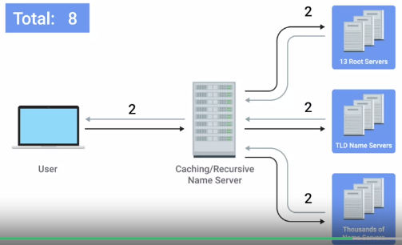

Index
DNS - NAMES RESOLUTION
DNS : DOMAIN NAME SYSTEMA global and highly distributed network service that resolves strings of letters into IP addresses for you.
Domain Name : A term we use for something that can be resolved by DNS.
Helps in geographically use ip addresses. Less traffic . Faster.
Types :
1. Caching Name servers : Used by ISP's -> Purpose is to store known domain name lookups for a certain amount of time
2. Recursive Name servers :Used by ISP's -> Full DNS resolution requests
3. Root Name servers : 13 root servers geographical locations
4. TLD Name servers :Top level domain
5. Authoritative Name servers : serves actual ip
Anycast : A technique that's used to route traffic to different destinations depending on factors like location, congestion, or link health
DNS uses UDP instead of TCP.
UDP is connectionless. No setup or teardown of connection. much less traffic.
Just takes 8 packets instead of 44 packets thru tcp.

DNS...works with tcp too at few places...
Resource - Record types:
A record : used to point a certain domain name at a certain IPv4 IP address.
DNS round robins : multiple IPs for domain name in cycle.
AAAA QUAD A record : returns IPv6 address.
CNAME record : used to redirect traffic from one domain to another. microsoft.com -> www.microsoft.com
MX record (mail record) : ensures mails get delivered to right mail server
SRV record (service record) : used to define the location of very specific services . for CalDev..
TXT record : used to convey info abt network for other computers to process. free form-. use it to communicate data..which doesnt use dns
Anatomy of a Domain Name:
www.google.com
www -> Sub Domain, Host Name
.google -> Domain -> used to demarcate where control moves from a TLD server to an authoritative server.
.com -> TLD-top level domain
All together : Fully Qualified Domain Name FQDN (255 characters)
Registrars - who sell unused domain names..partners with IANA.
DNS ZONE:
allows easier control over multiple parts of a domain.
zone files :SOA(declares zone name) NS records